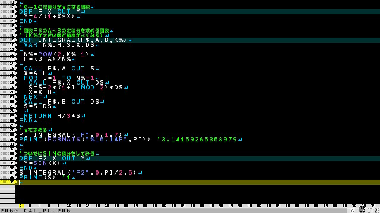

トップ>プチコン作品一覧>1画面プログラム
ここで紹介する1画面プログラムは、画面いっぱいに文字が詰まったテクニカルなプログラムではなく、単純に規模が小さいプログラムとなります。
定積分の計算方法として最も有名な手法は高校数学で習う「区分求積法」ですが、この手法はとても効率の悪い手法です。
今回はより高速で高精度に計算できるsimpson's ruleという手法を用いています。この手法については別途解説ページをつくる予定です。
質問があればtwitterまで。
※「プチコン」は株式会社スマイルブームの登録商標です。
1画面プログラム
公開キーなし
概要
自分が作った1画面プログラムを紹介していきます。ここで紹介する1画面プログラムは、画面いっぱいに文字が詰まったテクニカルなプログラムではなく、単純に規模が小さいプログラムとなります。
1.積分で円周率を求めるプログラム

\[
\int_0^1{\frac{4}{1+x^2}}dx=\pi
\]
上の定積分を利用して円周率を計算します。また、計算結果を使って\(\int_0^{\frac{\pi}{2}}{sin(x)}dx=1\)を確認します。定積分の計算方法として最も有名な手法は高校数学で習う「区分求積法」ですが、この手法はとても効率の悪い手法です。
今回はより高速で高精度に計算できるsimpson's ruleという手法を用いています。この手法については別途解説ページをつくる予定です。
質問があればtwitterまで。
※「プチコン」は株式会社スマイルブームの登録商標です。